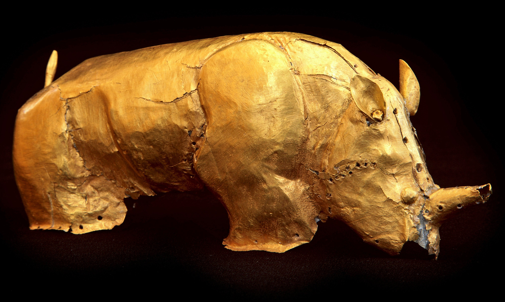

Click here to read more about the artifact

Golden Rhino of Mapungubwe
Photograph by Scott Ramsay.
| DC Element name |
Description |
| Title |
Golden Rhino of Mapungubwe. |
| Creator |
Scott Ramsay. |
| Subject |
Photography. |
| Description |
A little gold rhinoceros scupture, made of gold foil and tacked with minute pins around a wooden core. |
| Publisher |
Getaway. |
| Contributor |
www.getaway.co.za. |
| Date |
2012. |
| Type |
Image. |
| Format |
Image. |
| Format |
667 × 440 pixels. |
| Identifier |
https://www.sahistory.org.za/node/149624. |
| Source |
https://www.sahistory.org.za/node/149624. |
| Language |
en. |
| Coverage |
South Africa. |
| Rights |
Scott Ramsay. |
A thousand years ago, Mapungubwe in Limpopo province was the center of the largest kingdom in Africa, where a sophisticated people traded gold and ivory with China, India and Egypt.
The Iron Age site was declared a World Heritage site by Unesco in July 2003. Mapungubwe is an area of open savanah at the confluence of the Limpopo and Shashe Rivers and abutting the northern border of South Africa and the borders of Zimbabwe and Botswana. It thrived from around 1220 to 1300.